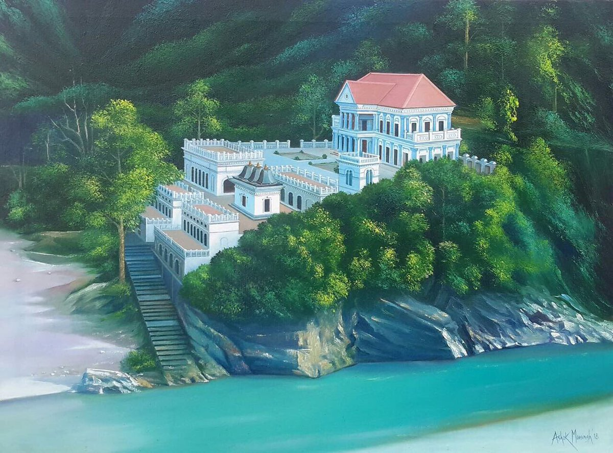

Get charmed by one of the "off-the-beaten-track" destinations in Nepal, the ancient hill town of Tansen.
Walk its cobbled bazaar to find a perfect Dhaka topi for yourself.
Traverse around Shreenagar Hills, do a day hike to the Rani Mahal on the banks of the Kali Gandaki River or
go backpacking along the river trail to find enchanting new routes.
Visit Ranighat Palace Also known as the Taj Mahal of Nepal,